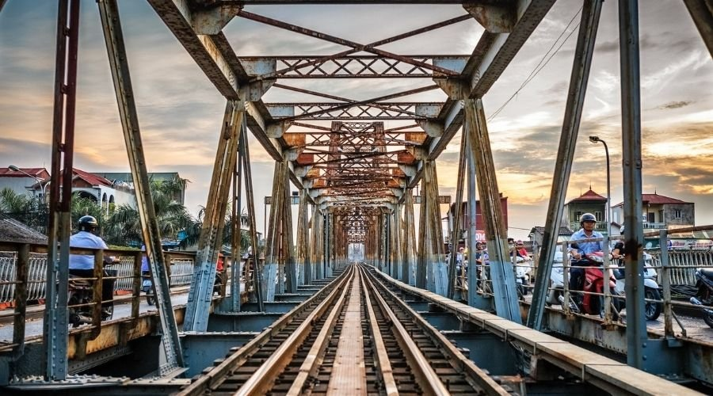

Tên ảnh: Ánh Dương
Chiều cao: 300px
Độ rộng: 300px
Mô tả:
Được chụp bởi mộ nhiếp ảnh gia nổi tiếng đến từ Pháp. Muốn chụp lại những bức ảnh cảu Hà Nội xưa cũ để làm kỉ niệm. Bước anht này là cầu long biên do người Pháp xây dựng nó dã đi qua biết bao nhiêu thăng trầm của Hà Nội. Cũng đã bị từng tàn pha nghiêm trọng trong chiến tranh nhưng đã được tu sửa vs những nét độc đáo. Tuy bị tàn phá nặng nề nhưng nó vẫn đứng nguy nga giữa Hà Nội là 1 minh chứng lịch sử cho cuộc kháng chiến trường kì.